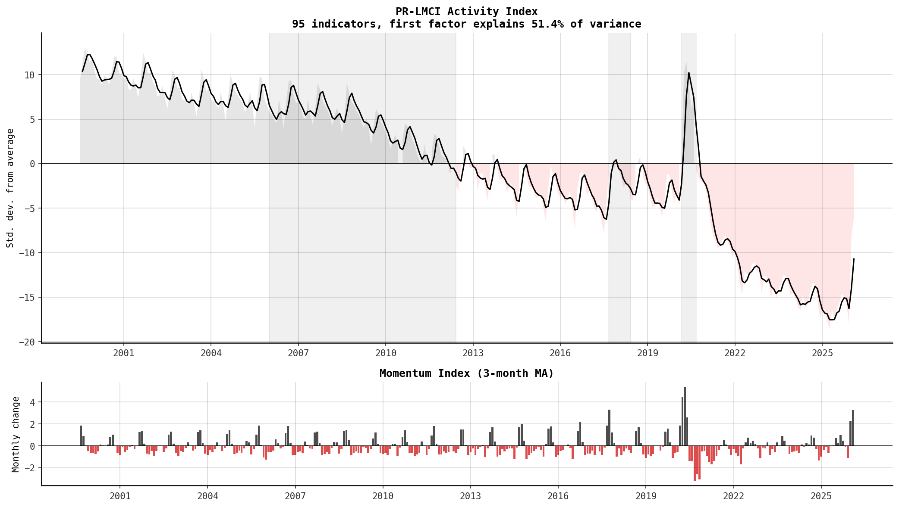
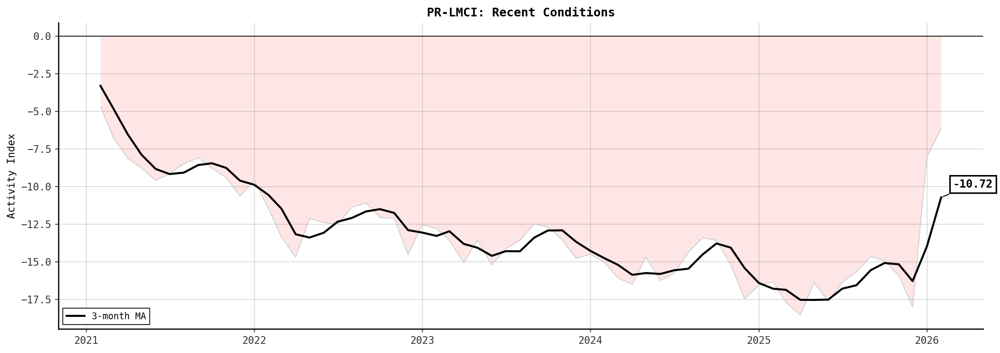
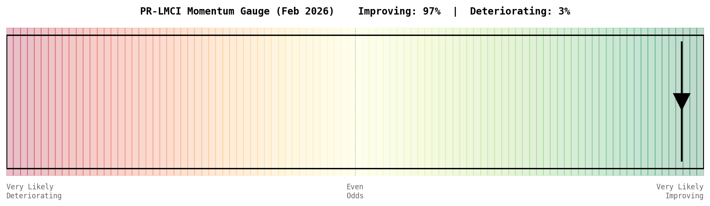
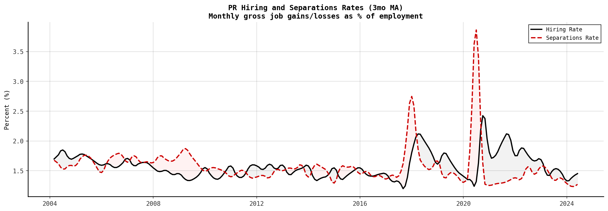
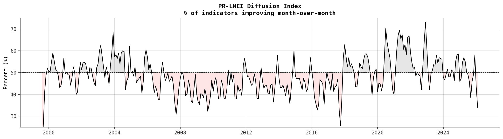

Puerto Rico Labor Market Conditions Index
Overview What this dashboard measures
What you are looking at: a monthly summary of Puerto Rico's labor market conditions, combining 95 economic indicators into a single index using a dynamic factor model.
Methodology: The PR-LMCI follows the Chicago Fed Labor Market Conditions Index (Brave and Cole, 2014). It extracts the first principal component from a standardized panel of employment, unemployment, job flows, tourism, construction, government revenue, and energy consumption series using EM-PCA to handle missing data.
Three outputs:
- Activity Index: the level of labor market conditions (0 = historical average).
- Momentum Index: month-over-month change in the activity index.
- Diffusion Index: % of indicators improving (above 50% = broad-based).
Data sources: PR Planning Board, PR Dept. of Labor (LMI), US Dept. of Labor (ETA), Business Employment Dynamics.
Latest Reading February 2026
The Puerto Rico Labor Market Conditions Index (PR-LMCI) stood at -10.72 in February 2026, indicating that labor market conditions remain below average. The momentum index registered +3.27, suggesting conditions are improving. The activity index has been below its historical average for 60 consecutive months (Figure 1).
The PR hiring rate, which measures gross job gains as a share of employment, stood at 1.47% in the latest period, compared to a 12-month average of 1.43%. The separations rate registered 1.30%, with hiring exceeds separations. The net flow rate of +0.18 percentage points is consistent with improving employment conditions (Figure 5).
The diffusion index, which measures the share of indicators improving month-over-month, stood at 34.0%, indicating narrow conditions (Figure 3). The PR-LMCI momentum gauge suggests a 94% probability that conditions will improve in the coming month, versus 6% for deterioration (Figure 6).
The current reading places PR labor market conditions at the 15th percentile of all observations since 1999. For comparison, the average activity index was -3.62 in the pre-Maria period (2015-2017), -3.02 in the post-Maria/pre-COVID period, and -13.55 since mid-2021. The factor loadings indicate that the index is most heavily influenced by manufacturing employment, government employment, and tourism registrations (Figure 4).
Activity Index Level of labor market conditions over time
How to read: Values above zero indicate above-average conditions; below zero indicates below-average. The 3-month moving average smooths monthly noise. Grey bands mark the 2006-2012 recession, Hurricane Maria, and COVID-19.

Recent Conditions Last 5 years
What you see: A close-up of the activity index with the current reading annotated.

Momentum Gauge Probability of improvement vs deterioration
How to read: The marker shows the model-implied probability that labor market conditions will improve next month. When the marker is right of center, improvement is more likely than deterioration.

Hiring and Separations Rates Inflow and outflow rates of employment
What these measure: The hiring rate (black solid) measures gross job gains as a share of total employment. The separations rate (red dashed) measures gross job losses. When hiring exceeds separations, employment is expanding. The shaded area shows the gap.
Data source: PR Business Employment Dynamics (quarterly, interpolated to monthly).

Diffusion Index Breadth of improvement across indicators
How to read: The diffusion index measures what fraction of the 95 input indicators improved month-over-month. Values above 50% indicate that more indicators are improving than deteriorating (broad-based improvement). Currently at 34.0%.

Change Probabilities Model-implied vs historical distribution
How to read: Black bars show the model-implied probability for each range of next-month activity index changes, based on recent momentum. The dashed line shows the historical distribution since 1999. When model-implied probabilities exceed historical benchmarks, that outcome is more likely than usual. The relative odds box summarizes the balance of risks.

Data Download the full time series
The PR-LMCI data is available for download in CSV format.
- PR-LMCI index — activity, momentum, diffusion (monthly)